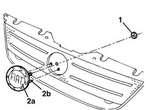

7055A84 FRONT ORNAMENT - R R
- Path
- Procedures > 70 FITTINGS > 7055 MOULDINGS ON PROTECTIONS > 7055A EXTERIOR MOULDINGS > 7055A84 FRONT ORNAMENT - R R
- Kind
- repair procedure (removal / refitting; the operation number is the code)
- Applies to
- all engines; production: da 06/04
- Interactive page
- https://sloeber94.github.io/elrnDB-fMltpl/en/#/186003584
Applies to: all engines; production: da 06/04
 Removing
Removing
 Refitting
Refitting- Undo the nut.
- Remove the badge (2a) releasing the centering pins (2b).

Applies to: all engines; production: da 06/04
Refitting
Removing- Check that the badge is not damaged.
- Position the badge attaching the centering pins.
- Tighten the nut.
- Op. 7055A43 CENTRAL FRONT GRILLE - R R